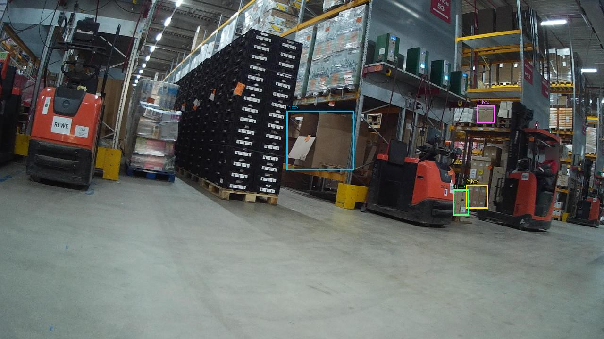
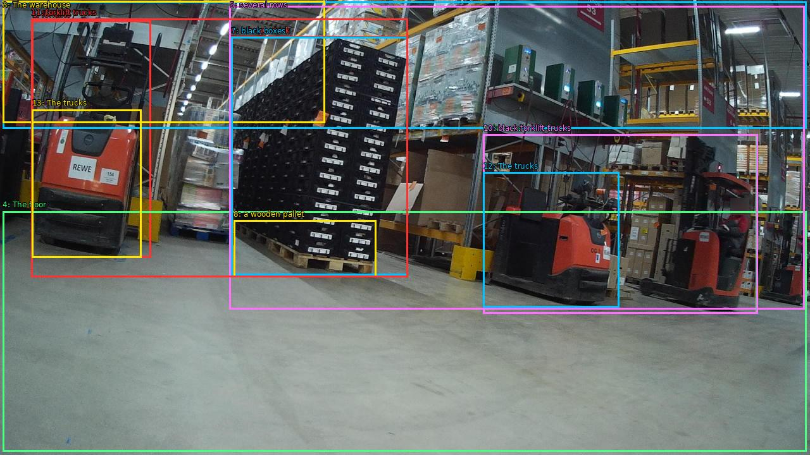

The image shows a large warehouse with multiple forklifts parked in it. The warehouse has a high ceiling with overhead lights and metal beams. The floor is made of concrete and there are several rows of shelves with various items on them. On the left side of the image, there is a large stack of black boxes on a wooden pallet, and on the right side, there are two red and black forklift trucks. The trucks are positioned in a way that they appear to be moving through the warehouse. The overall atmosphere of the warehouse is busy and organized.


Original · Caption raw · Grounding raw · Koordinate
Številke so lokalni ID regije. Dolge slikovne oznake so skrajšane; spodaj so celotne fraze. Napovedane regije se lahko prekrivajo ali opisujejo skupine.
| ID | Celotna fraza | bbox xyxy |
|---|---|---|
| 1 | forklifts | [50.55999755859375, 32.76000213623047, 238.72000122070312, 407.8800048828125] |
| 2 | The warehouse | [4.480000019073486, 2.5199999809265137, 1274.239990234375, 203.40000915527344] |
| 3 | The warehouse | [4.480000019073486, 1.8000000715255737, 513.9199829101562, 194.04000854492188] |
| 4 | The floor | [4.480000019073486, 334.44000244140625, 1274.239990234375, 714.6000366210938] |
| 5 | several rows | [362.8800048828125, 9.0, 1271.679931640625, 489.2400207519531] |
| 6 | a large stack | [365.44000244140625, 57.96000289916992, 644.47998046875, 435.96002197265625] |
| 7 | black boxes | [365.44000244140625, 58.68000411987305, 644.47998046875, 435.96002197265625] |
| 8 | a wooden pallet | [369.2799987792969, 348.84002685546875, 594.5599975585938, 438.84002685546875] |
| 9 | two red | [763.5199584960938, 212.760009765625, 1196.1600341796875, 496.4400329589844] |
| 10 | black forklift trucks | [763.5199584960938, 212.760009765625, 1197.43994140625, 496.4400329589844] |
| 11 | forklift trucks | [49.279998779296875, 29.880001068115234, 644.47998046875, 438.84002685546875] |
| 12 | The trucks | [763.5199584960938, 272.52001953125, 978.5599975585938, 486.3600158691406] |
| 13 | The trucks | [50.55999755859375, 173.16000366210938, 223.36000061035156, 407.1600036621094] |